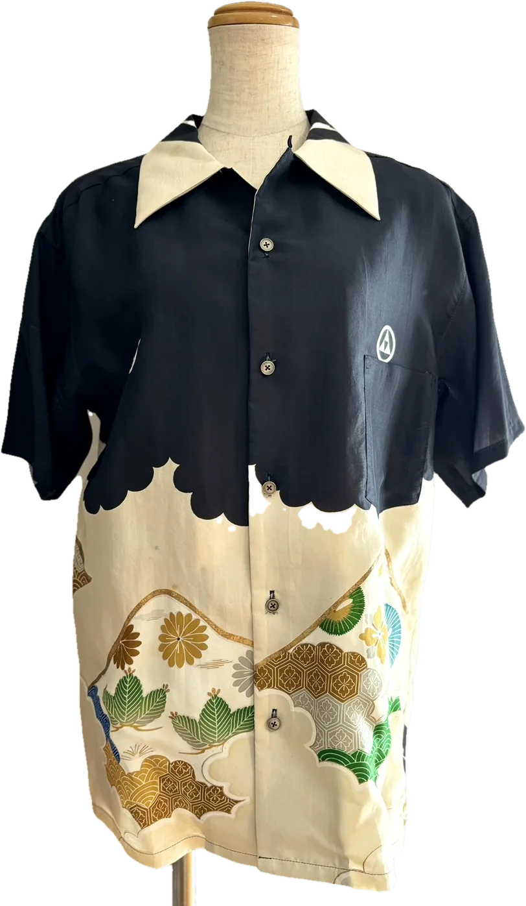
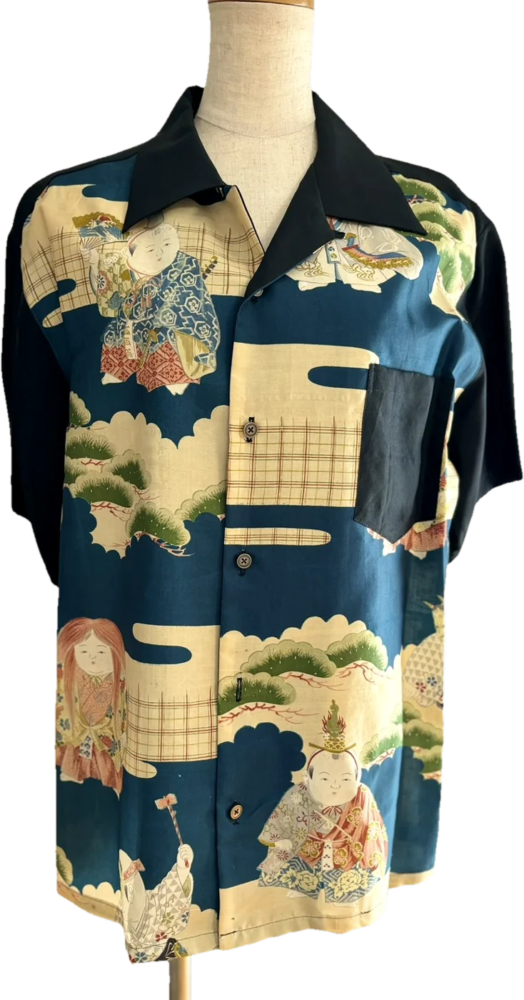
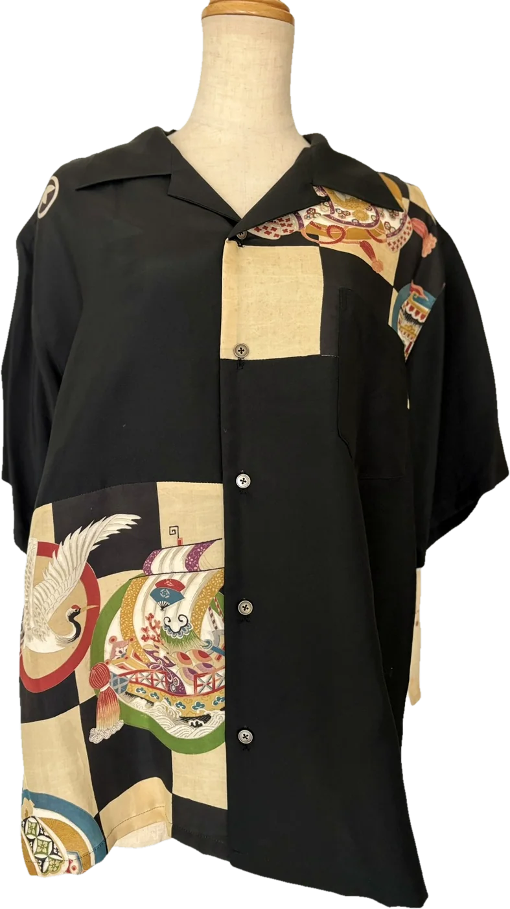
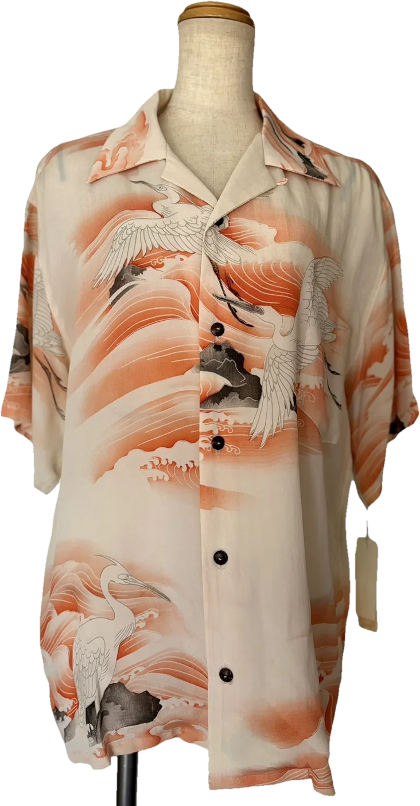
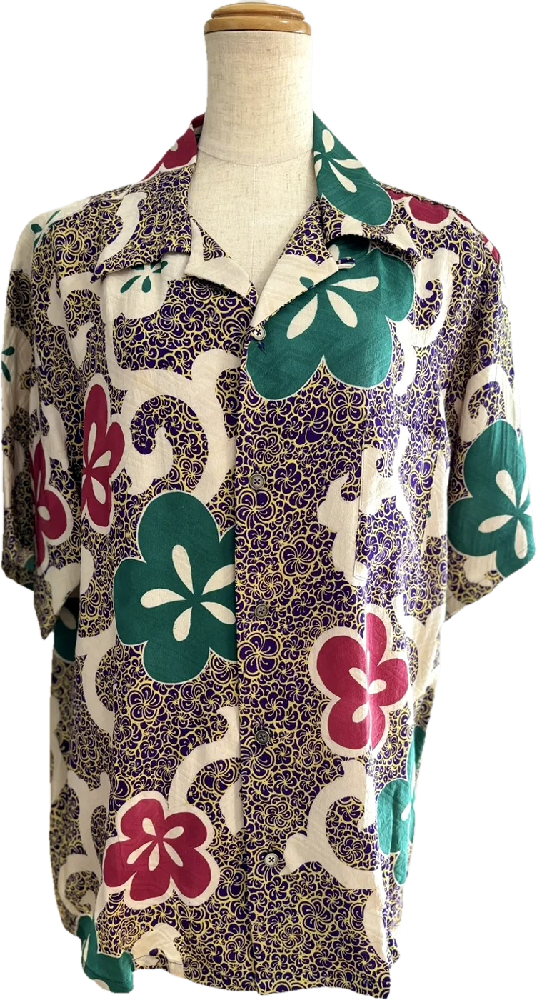
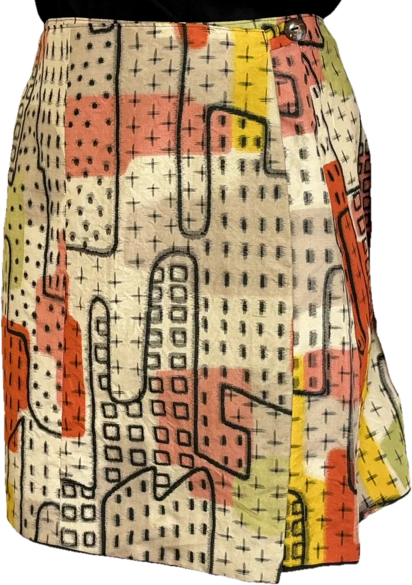
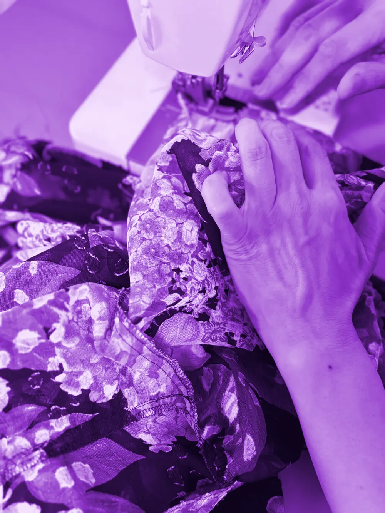

Concept
-mono- は、リメイクに特化したブランド。
「纏う」という言葉が似合う服をつくります。
English-mono- is a brand devoted to remaking. We make clothes that deserve the word matou: to wrap yourself in.
繁體中文・台灣-mono- 是專注於「重製」的品牌。我們製作值得「披於身上」的衣裳。
简体中文-mono- 是专注于“重制”的品牌。我们制作值得“披于身上”的衣裳。
繁體中文・香港-mono- 是專注於「改造重製」的品牌,製作值得「披上身」的衣服。
着物リメイク / Kimono Remake / 和服重製






Contact
- ご購入の相談・お問い合わせは、Instagram の DM で。
- For purchases and questions, message us on Instagram.
- 購買諮詢與洽詢,請透過 Instagram 私訊。
- 购买咨询与洽询,请通过 Instagram 私信。
- 選購及查詢,歡迎經 Instagram 私訊。
